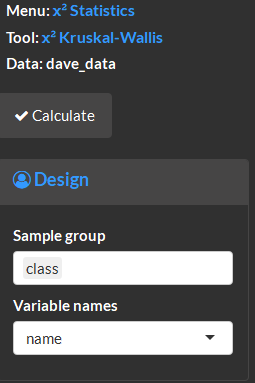
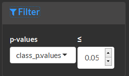
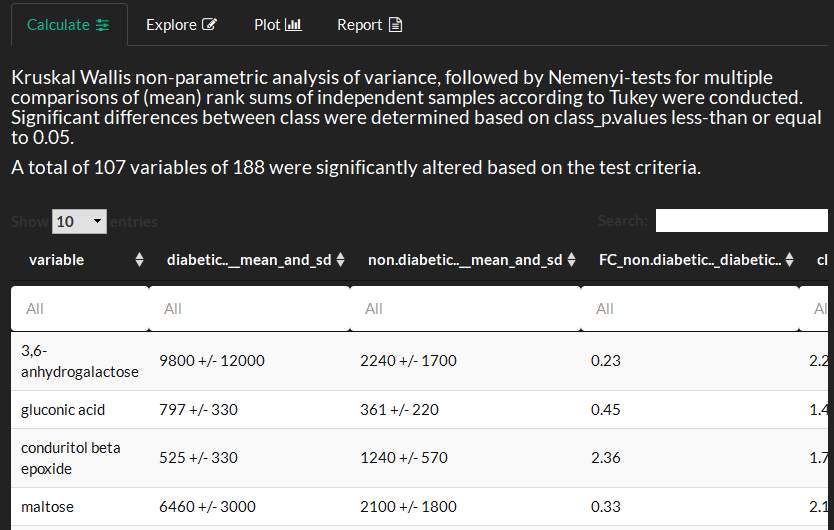
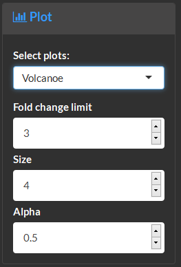
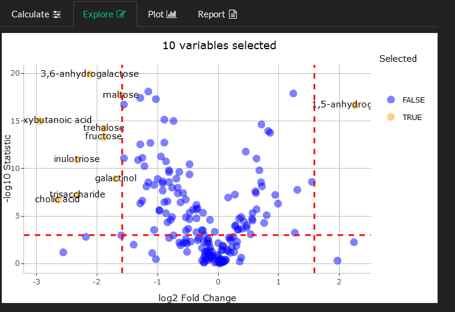
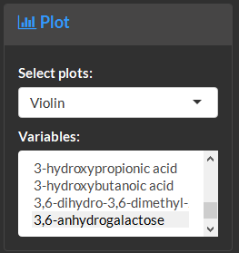
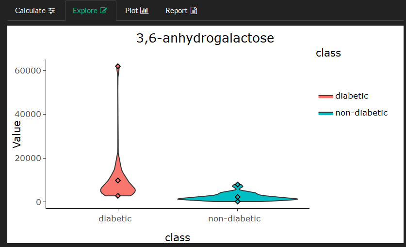
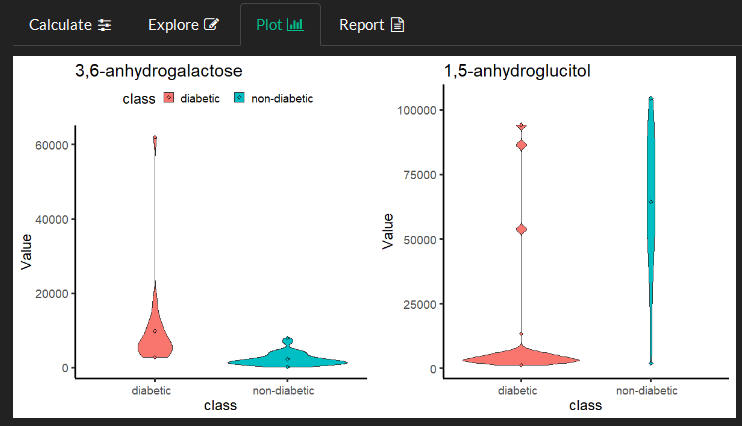
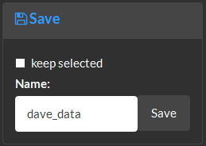

3 Statistics
The statistics module is used to carry out statistical analyses, identify and filter the data based on significant differences between groups.
two-class
This data analysis implements a non-parametric test for differences in means between two groups. This test does not assume normality and can be robust to outliers when testing for differences in means between two groups with small samples sizes. This module can also be used to identify differentially expressed variables between groups and create filtered datasets based on the test p-values Hollander and Wolfe (1973).
Identify experimental design factor(s) to use for tests and specify variable meta data.

Select significance level (alpha) to use in visualizations and filter the data.

View statistical test results.

Create a volcano plot to visualize the relationship between variable fold-changes between groups and test p-values.

Identify variables with large fold-changes between groups and low p-values.

Select one or many variables to generate violin density plots.

Explore variable distributions among groups.

Use plot to view many variables and overview the plot style for the report.

Save results and optionally remove non-significant variables by selecting keep selected.
